Clara BrainBuddy is an app specifically designed for neurodivergent individuals to help them plan and organize their day. The app offers various features to help you complete your tasks.
Daily Planning Tips
To get the most out of your daily planning, consider the following tips:
1. Daily Planning
Only include tasks in your daily plan that you actually want to complete on that day.
Everything you want to do or need to complete later should be moved to long-term planning (all tasks).
You can only include a certain number of tasks in your daily plan. You can set this number in the settings. The default is a maximum of 10 tasks.
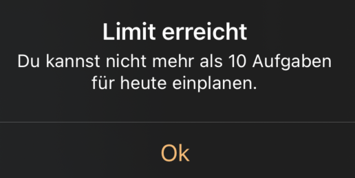
2. Task Order
The order of tasks in the list indicates the order in which they should be completed.
The task at the top has the highest priority.
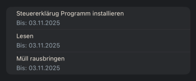
3. Estimated Time
If needed, specify an estimated time for completing a task to see if you've taken on too much.
If you don't specify a time, a default time of 15 minutes is calculated. You can adjust this time in the settings.
The app then calculates the time needed to complete all tasks in the daily plan and compares it with your personal time budget for the current day.
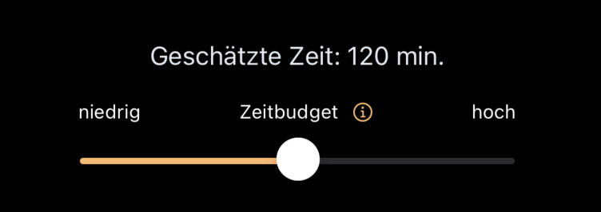
4. Energy Impact
Use the "Energy Impact" to control whether a task tends to give you more energy or if you need to expend a lot of energy to complete it.
The app then displays a suitable battery symbol for the task.
Always plan tasks in between that give you energy back.
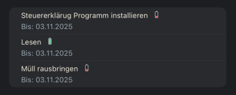
Task Planning
Creating Tasks
You can create new tasks using the plus button.
Prioritizing Tasks
Use the drag-and-drop function to set the processing order of your tasks.
The highest priority is simply the task at the top.
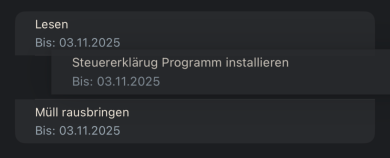
Reordering Tasks
This function reorders your tasks. If you have problems with your executive functions, it helps to start with the simplest tasks. This function supports you in doing so.
Completed tasks are sorted to the bottom.
The remaining tasks are sorted by the estimated time for completion. Those with the lowest processing time are at the top.
Tasks without an estimated time are given a standard time that you can set in the settings.
If the estimated time is the same, tasks are sorted by due date.
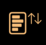
Marking Tasks as Completed
If you have completed a task, you can mark it as completed by swiping it to the right.
The task is crossed out, and you receive haptic feedback through double vibration.
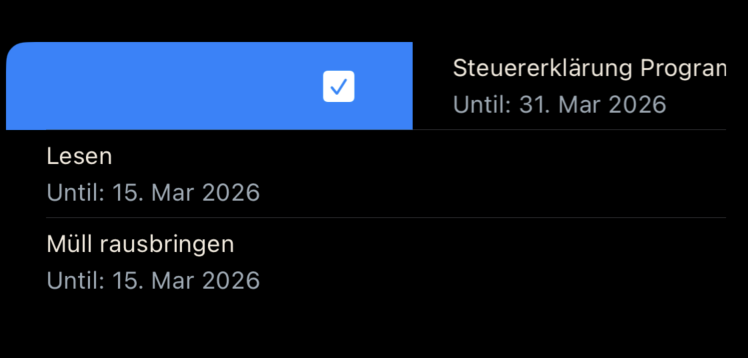
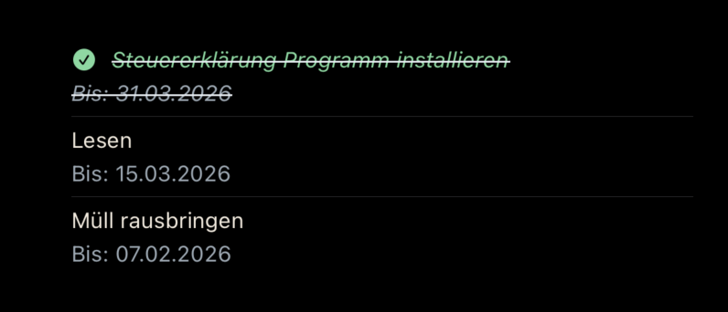
Removing Tasks
To remove a task from the daily plan without deleting it completely, simply swipe the task to the left.
A context menu opens.
There, you can also delete the task directly by clicking on the trash can.
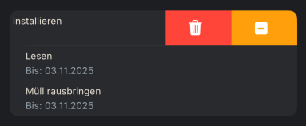
Calendar Integration – Notifications for Appointments
If you have appointments in your calendar for today or tomorrow, a bell will appear in the navigation bar of the daily plan.
By clicking on the bell, you can view the appointments.
Simply swipe the displayed appointments to the right to include them in your daily plan.
Time Budget Controller
The time budget controller helps you manage your workload.
If you have little time, i.e., your executive capacity is low, you can only complete a limited number of tasks.
The estimated time is displayed in red if you exceed a certain limit based on your time budget. The medium setting means you have 1.5 to 3 hours available. The high setting means you can accomplish a lot on that day.
However, there is also a limit here so you can see if your daily plan is too full.
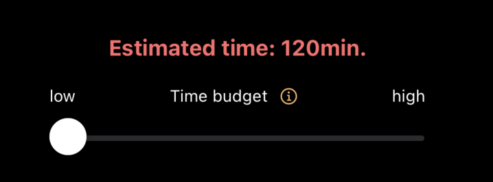
Completed Tasks
When you have completed the first task from the daily plan, a yellow checkmark appears in the navigation bar.
By clicking on this checkmark, an info window opens, giving you an overview of your completed tasks. In this info window, you can see the number of completed tasks and the total time required.
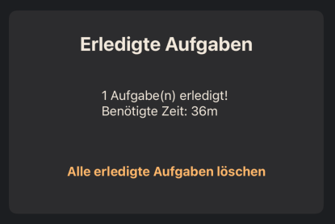
Additionally, there is a button that allows you to delete all completed tasks from the daily plan at once.
Apple Shortcuts Integration
Clara BrainBuddy supports integration with Apple's Shortcuts to give you even more flexibility and control over your tasks.
Predefined Shortcuts
These shortcuts are predefined and can also be used with Siri.
Shortcut
Description
Create Task
Creates a new task. All parameters except the title are pre-filled with default values. The task is added to the top of the stack of all tasks.
For Today
Creates a task that is sorted at the top of the daily plan.
Complete By
Creates a task with a due date. In addition to the title, you can specify a date by which the task must be completed.
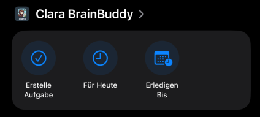
Additional Functions for Use in Custom Shortcuts
Number of Completed Tasks: This shortcut gives you an overview of the number of completed tasks.
Create Task with All Parameters: This shortcut allows you to create a task with all available parameters. If you leave the complete by date empty, the task will be scheduled for today.
First Task to Complete: Returns the topmost task to be completed from the daily plan. Or the message "No tasks planned for today" if there are no tasks to complete.
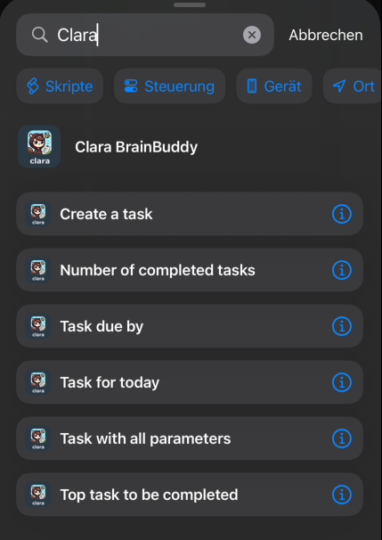
Custom Shortcuts
Check Todos
This shortcut checks if you have completed more than X tasks. Currently, X is preset to 5, but you can change it to a value you prefer.
If you haven't completed the required number of todos, the shortcut retrieves the top task from the daily plan and includes it in a reminder text. If there are no tasks to complete, it returns empty and the shortcut ends.
You can use this shortcut to, for example, set up a lock for social media apps if you haven't completed enough tasks for the day. How to set up such a lock is described in the next section.
Hey there, it's me, Clara 🐿️,
You are about to open <AppName>. ✨💕
Would you like to take a look at your tasks first?
Maybe there is one thing left to be done 🫶
<First task to complete>
You can customize the reminder text by adjusting the shortcut after downloading it.
Typical Task Sets
With this shortcut, you can create a list of typical tasks that are performed repeatedly but not quite regularly.
Examples of tasks in such a set might be:
Pack bag
Have breakfast
Prepare and pack lunch
Ventilate
Take keys
Turn off lights
You can create such a shortcut or a similar one by following these steps:
Open the Shortcuts app on your iPhone.
Tap the "+" symbol to create a new shortcut.
Tap "Add Action" and search for the action "Create Task".
Add a title that corresponds to one of the tasks in your list to be created, e.g., "Pack bag".
Repeat this for all tasks you want to include in your set.
If you want to set additional parameters, use the action "Create Task with All Parameters" instead.
Save the shortcut under a suitable name.
You can also define your own icon for this shortcut.
You can adjust the shortcut at any time by adding new tasks or editing existing ones.
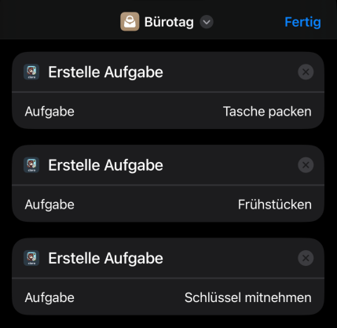
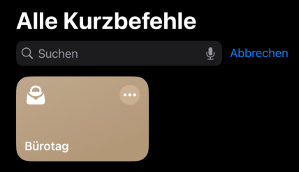
Task List
With this shortcut, you can create a task list from which you can select a single task to include in your daily plan.
This could be, for example, organizational tasks or household tasks that you regularly perform but not at predefined times.
Example:
Shopping
Paying bills
Start the dishwasher
Unload the dishwasher
Start the washing machine
To create a shortcut that allows you to select tasks from a predefined list and integrate them into your daily plan, follow these steps:
Open the Shortcuts app on your iPhone.
Tap the "+" symbol to create a new shortcut.
Tap "Add Action" and search for the action "List".
Define the tasks in the list that you want to offer for selection.
Search for the action "Choose from List" and add it to the shortcut.
Finally, search for the action "Task for Today" and add it.
Set the "Task" in this action to the "Selected Item".
Save the shortcut under a suitable name.
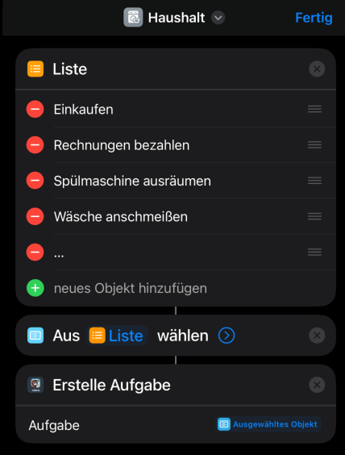
You can also define your own icon for this shortcut.
You can adjust the shortcut at any time by adding new entries to the list or editing existing ones.
App Automation
With Apple's Automation, you can use the "Check Todos" shortcut to set up a lock for social media apps.
Create Automation:
Open the Shortcuts app on your iPhone.
Go to the "Automation" tab and tap "New Automation" to create a new automation.
Start App:
Select the action "App".
Under "When", select the social media app you want to lock.
Check the box for "is opened".
Set the option to "Run Immediately".
Click "Next".
Add Action:
Search for the "Check Todos" shortcut.
Add the "Check Todos" shortcut to your automation.
Save Automation:
Save the automation.
Now, every time you try to open the social media app, the "Check Todos" shortcut will run. If you haven't completed enough tasks, you'll get a reminder and can decide whether you want to complete your tasks first.
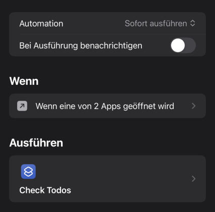
Regular Recurring Tasks
Creating and Managing Regular Tasks
You can define regular tasks that automatically appear in your daily plan.
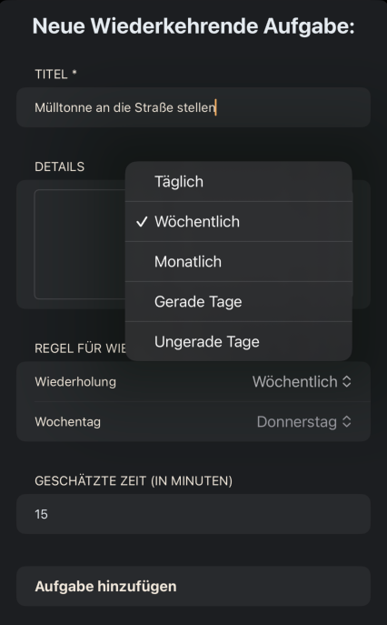
Different Types of Recurring Tasks
Daily
Weekly with specification of the day of the week
Monthly with specification of the day (1..31)
Even weekdays (excluding weekends)
Odd weekdays (excluding weekends)
Integration into the Daily Plan
By simply swiping to the right, you can include these regular tasks in your daily plan.
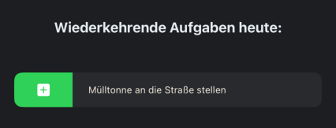
Long-Term Planning (Stack of All Tasks to Complete)
Taking Over Tasks into the Daily Plan
The "All Tasks" view gives you an overview of all the tasks you have created. From this, you can take over tasks into your daily plan. Select the task in the overview of all tasks and swipe to the right, then tap the calendar icon. This moves the task to the daily plan.
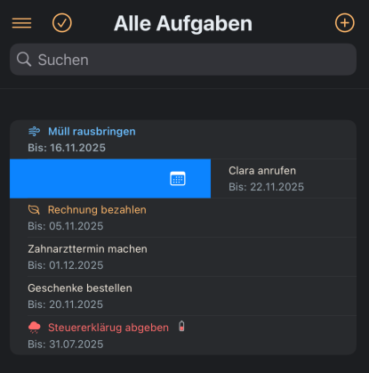
Once you have included a task in the daily plan, it will be marked in blue. Tasks that need to be completed soon are displayed in orange. An overdue task is marked in red. The additionally displayed emojis can be hidden in the settings if they bother you.
Other Possible Actions
In the "All Tasks" view, you have various options to interact with your tasks:
Swipe to the right: A menu opens with the following options:
Calendar (Blue): Takes over the task into the daily plan.
Pencil (Green): Allows you to edit the task.
Share (Turquoise): Allows you to share the task with others, who can then import it again.
Copy (Light Blue): Copies the content of the task.
Duplicate (Gray): Duplicates the task.
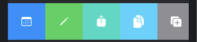
Swipe to the left: Deletes the task.
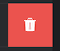
Procrastination / Resistance to Tasks
With Clara BrainBuddy, you can recognize when you repeatedly postpone a task. This helps you identify tasks that are particularly difficult for you or that you might need to replan.
How Does the Resistance Bar Work?
Repeated Postponement: If you repeatedly include a task in your daily plan but do not complete it and then move it back to long-term planning, the app displays a resistance bar.
Visual Representation: The bar gets longer and changes color with each postponement:
Yellow: Low resistance – the task has been postponed once.
Orange: Medium resistance – the task has been postponed several times.
Red: High resistance – the task is frequently postponed and should be reconsidered.
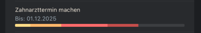
Automatic Increase: In the future, the resistance will also increase if a task remains in the daily plan for more than one day without being completed.
Adjusting the Resistance Bar
If you do not want to use this feature, you can hide the display of the resistance bar in the settings. In the settings of Clara BrainBuddy, you can also customize many other functions according to your needs.
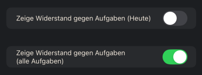
Keeping Tasks in Focus
When you start the app, Clara BrainBuddy randomly shows you a task from the "All Tasks" list that has not yet been completed and is not included in the daily plan. This feature helps you discover tasks that you may have forgotten or that are not urgent but should still be completed.
This feature is particularly useful for bringing tasks that are often overlooked or postponed back into focus. It helps you keep a better overview of all pending tasks and ensures that even less urgent tasks are not forgotten.
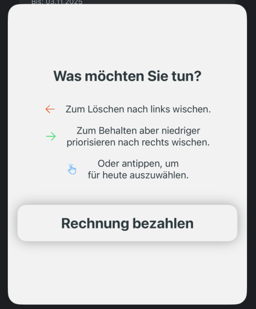
You have several options for dealing with this task:
Swipe left to delete: If you no longer want to keep the task because it has become irrelevant, swipe left to delete it directly. This can help you keep your task stack tidy.
Swipe right to keep but lower priority: If you want to keep the task but do not want to complete it immediately, swipe right to keep it but lower its priority. It will then move further down the list.
Or tap to select for today: If you want to complete the task today, simply tap on the task to include it in your daily plan.
Menu
In the Clara BrainBuddy menu, you will find various options to control and configure the app.
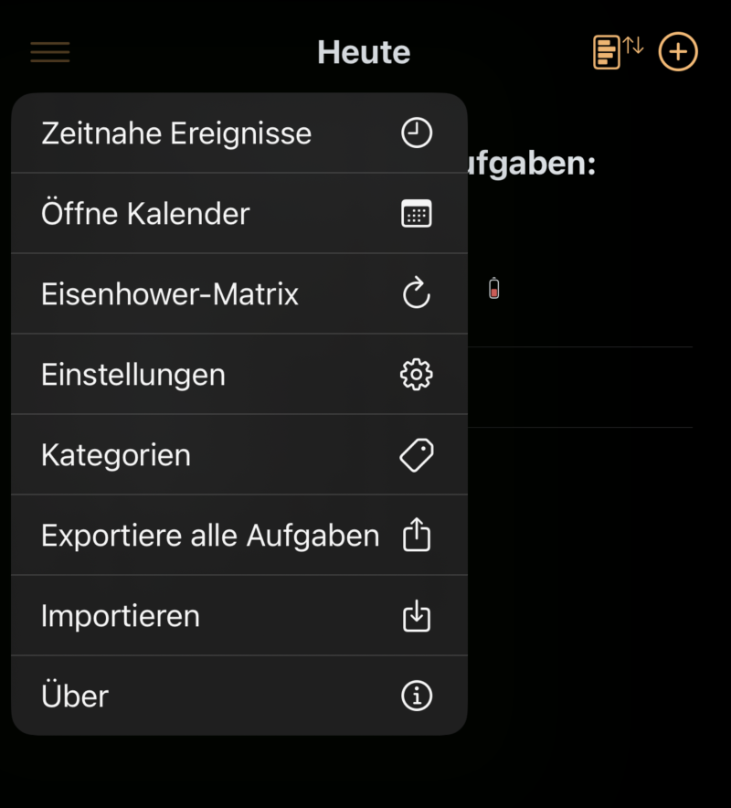
Menu Item
Description
Upcoming Events
Shows all events for today and tomorrow. You can include them in your daily plan by swiping to the right. The duration of the event is adopted as the estimated time for the time budget calculation. All-day events are included without estimated time.
Open Calendar
Opens the iPhone calendar.
Settings
Here you will find various settings to customize Clara BrainBuddy.
Export All Tasks
Exports all tasks to a file that you can use for backup, for example.
Import
Imports tasks from a file.
About
Information about the app.
Eisenhower Matrix
The eisenhower matrix helps you sort all tasks of the day by urgency and importance. This way, you can better decide which tasks take priority and how to adjust your daily plan.
With the matrix, you can assign each task to one of the following categories:
Urgent & Important: These tasks remain in your daily plan and are sorted at the top.
Urgent: These tasks also remain in your daily plan but are sorted further down.
Important: These tasks are removed from the daily plan and inserted at the top of the "All Tasks" overview so you can work on them later.
Neither Urgent nor Important: These tasks are also removed from the daily plan and inserted at the bottom of the "All Tasks" overview.
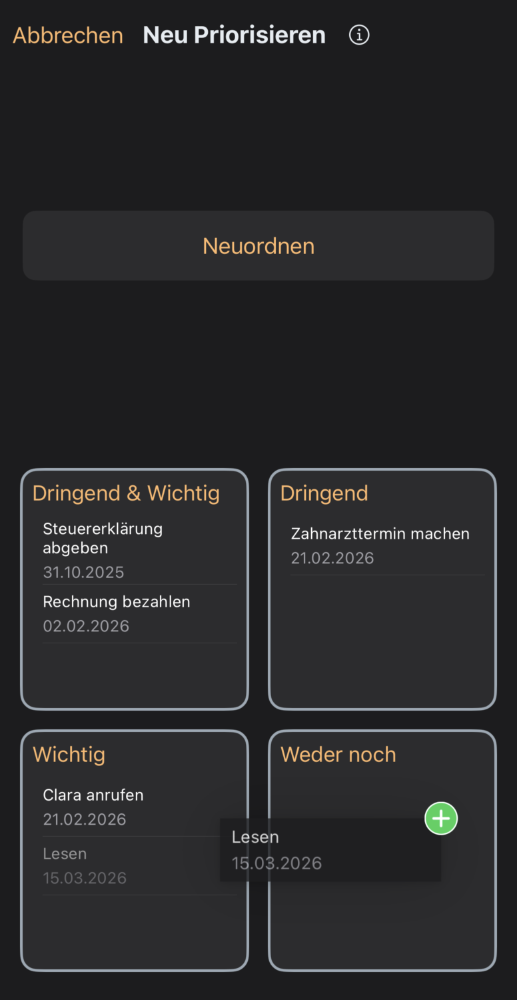
After assigning, the tasks are automatically reordered so you can focus on what matters most.
Notifications
Clara BrainBuddy automatically reminds you in the morning and evening about your tasks:
Morning: A reminder to check the app to see what's coming up today.
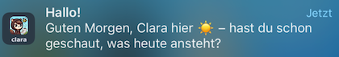
Evening: A reminder to check if you have completed everything.
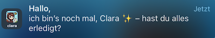
You can adjust the times for these notifications in the Clara settings. If the notifications bother you, you can turn them off in the Apple iOS settings.